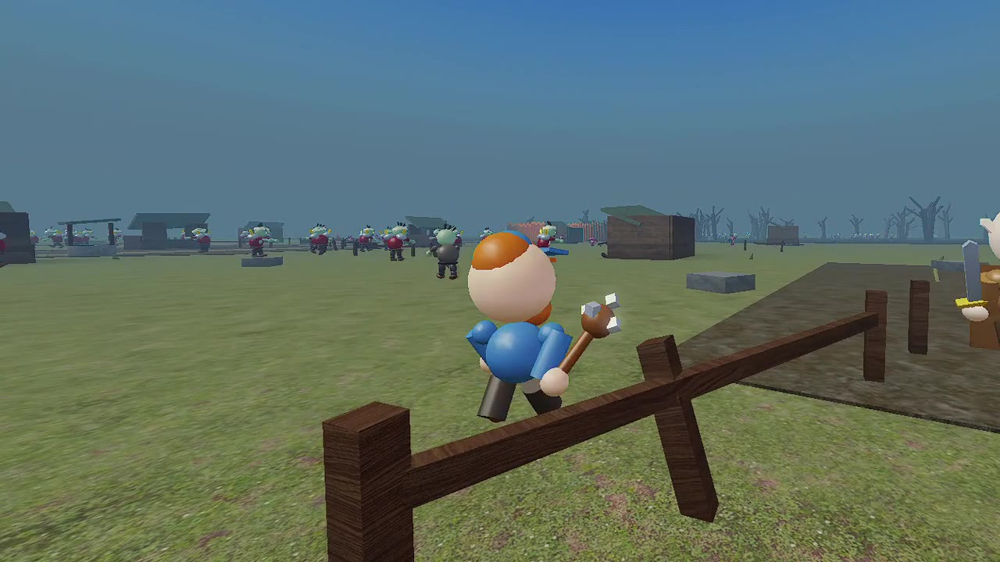
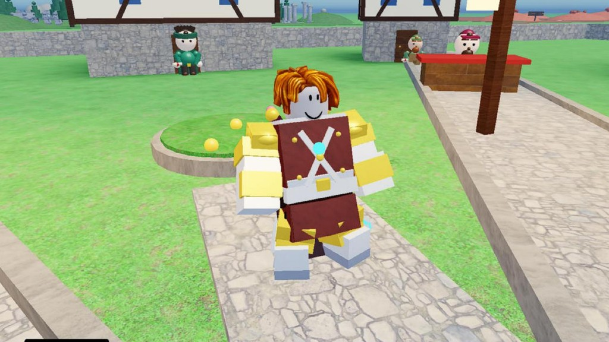
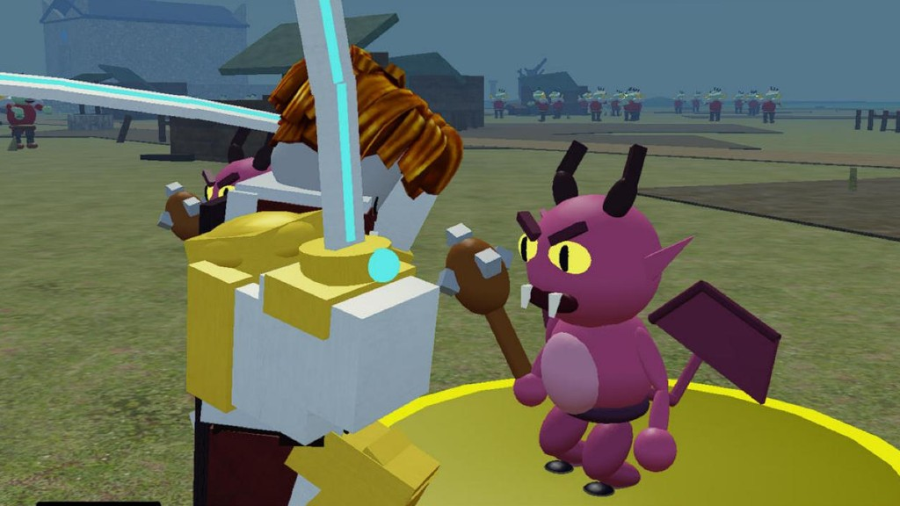
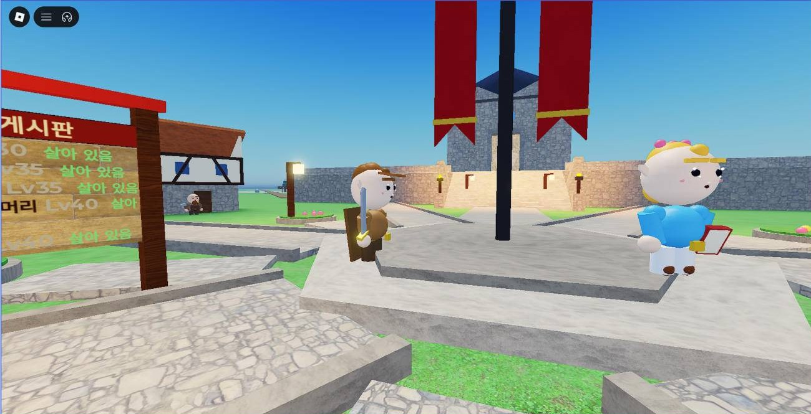
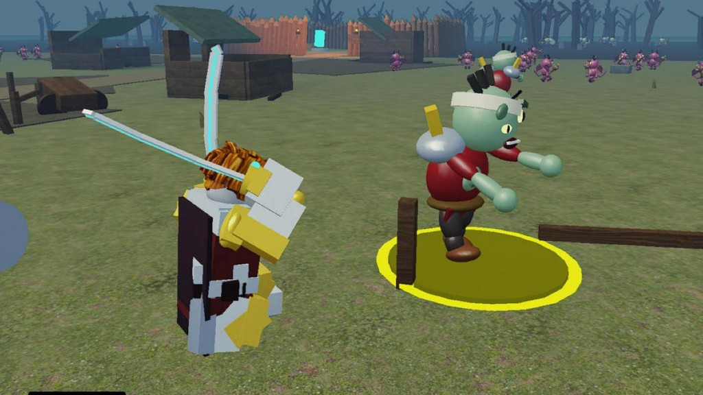

Chronicle Online
Old-school MMORPG feel in cartoon style — Human · Elf · Dark Elf · Orc · Dwarf, auto hunt, enchant up to +20, raids and parties. Free on Roblox.
📜 Game Guides
First 10 min · Controls · Growth · Enchant · Money & trade · Mercenaries & summons
👾 Monster Codex
169 monsters — level, HP, zone, drops
🗡 Item Database
1189 items — grade colors, where they drop and sell
🗺 Hunting Grounds
36 zones — level range and monsters
✨ Classes & Skills
5 races × fighter/mage, 1st & 2nd classes, skills
⚒ Systems
Enchant table · Auto hunt [A] · Mercenary pets · Summons · Raid dice · Coupons
Latest News
- Patch 128 (2026-11-06) — 애널리스트 전부
- Patch 127 (2026-11-06) — 유입 추적
- Patch 126 (2026-11-06) — 렉 1차
- Patch 125 (2026-11-05) — 전체 연령 오픈 기념 쿠폰 ALLAGES
- Patch 124 (2026-11-05) — 캐릭터 음성 2종 (물리 스킬 기합 · 피격)
English patch notes are summarized; full notes are in Korean.
Grade colors — same as enchant glow
No grade · Lv 1+ D grade · Lv 20+ C grade · Lv 40+ B grade · Lv 52+ A grade · Lv 61+ S grade · Lv 76+



